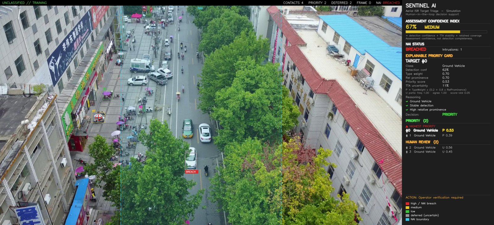
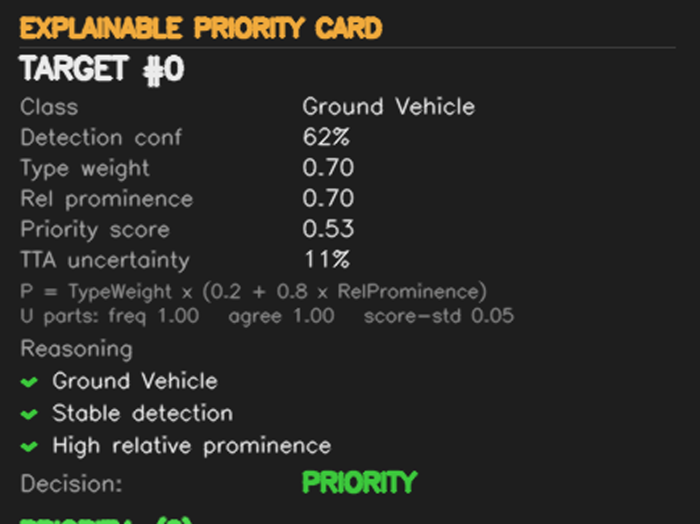
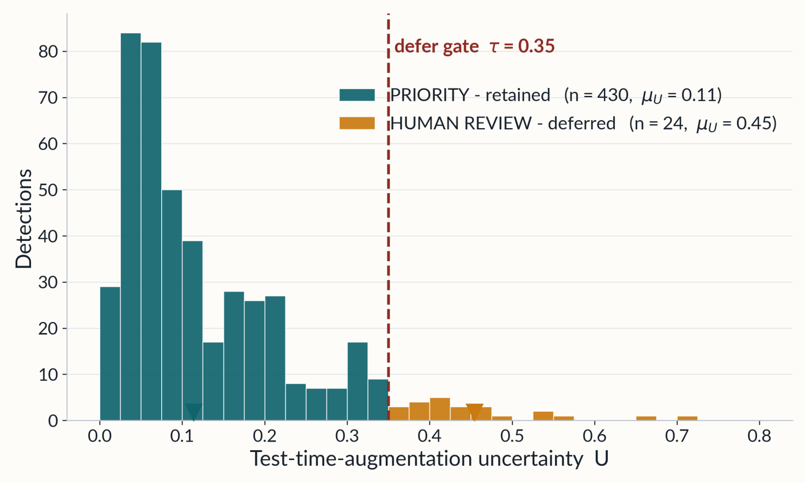
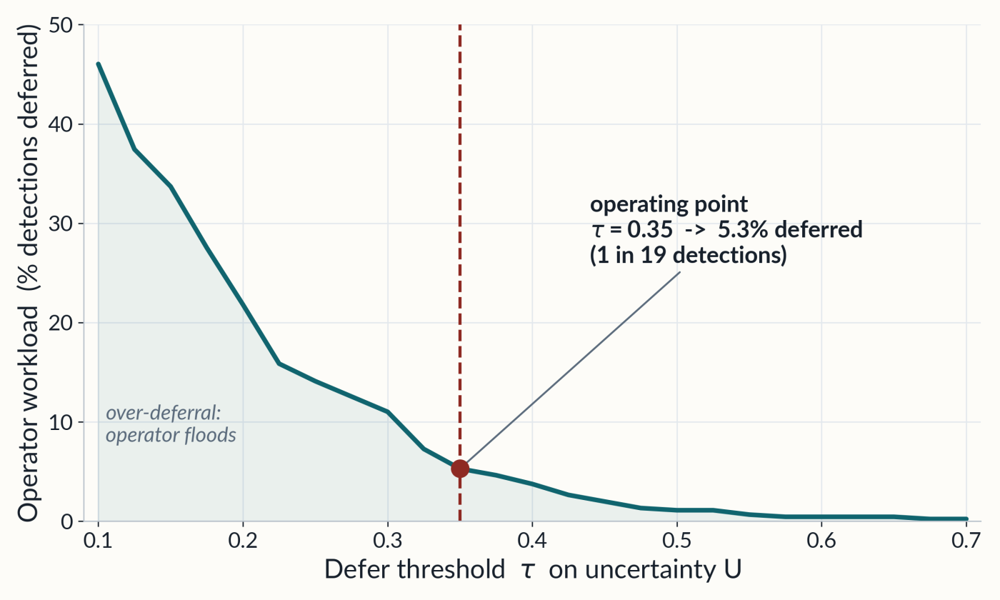

UNCLASSIFIED // RESEARCH SIMULATION
Uncertainty-Aware Human-in-the-Loop AI for Aerial Target Triage
SENTINEL is an AI decision-support system that ranks stable detections and defers uncertain detections to a human operator.
سنتينل نظام دعم قرار: يرتّب الاكتشافات المستقرة آليًا، ويحيل الاكتشافات غير المؤكدة إلى مشغّل بشري.
The AI that knows when to ask for help.
SENTINEL does not train or modify any detector. YOLOv8n is used frozen, exactly as published, on COCO weights.
A training-free, label-free layer measures how stable each detection is, then decides what may be auto-ranked and what must go to a human.
SENTINEL ranks attention, not actions. There is no autonomous engagement and no targeting output. The human remains responsible by design.
U > 0.35 ?U = 0.7 × (1 − frequency × class_agreement) + 0.3 × min(score_std / 0.15, 1)
P = TypeWeight × (0.2 + 0.8 × RelativeProminence)
All constants are declared openly in the source code — every ranking is auditable.

Stable detections, auto-ranked by the transparent priority score P.
Unstable detections are deferred — they need the operator's eyes, not suppression.

Every ranking decomposed on screen: type weight × relative prominence → P, plus U and its three components.
A Named Area of Interest polygon flags intrusions. Image-space simulation — no georegistration.
Confidence + TTA stability + retained coverage. It measures assessment confidence, not detection completeness.


Ali Dokmak
SENTINEL Thesis Project
GitHub: github.com/alidokmak/SENTINEL